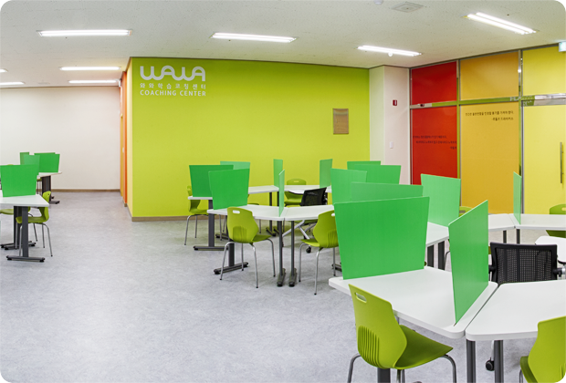

수강·위치 안내
주소·안내 학년·교습비 원문과 운영 조건을 확인합니다.
수강·위치 안내 전체 목록와와학습코칭학원 · 초중고 학습코칭
아이에게 맞는 공부는 지금의 이해도와 습관을 아는 것부터 시작합니다. 영어·수학 수업에 진단, 플래너, 오답 피드백을 연결해 스스로 공부하는 과정을 함께합니다.
필요한 정보부터 찾아보세요
가까운 수업의 정보를 확인하고, 지금의 공부에 필요한 자료를 골라 읽어보세요.
먼저 필요한 정보를 골라 보세요. 실제 수강 조건, 학생 답안의 점검 방법, 수업 선택 질문을 서로 다른 안내에서 확인할 수 있습니다.
주소·안내 학년·교습비 원문과 운영 조건을 확인합니다.
수강·위치 안내 전체 목록초등·중등·고등 영어·수학의 학생 답안과 복습 기록을 살펴봅니다.
진도·오답 점검 전체 목록과목과 학교급에 맞춰 수업을 비교할 질문과 준비 자료를 정리합니다.
비교·선택 기준 전체 목록01 · 와와의 학습코칭
같은 학년이라도 잘하는 부분과 막히는 이유는 다릅니다. 학생별 진단으로 출발점을 찾고, 선생님과 계획을 세운 뒤 직접 실행하고 돌아보는 경험을 쌓습니다.
점수뿐 아니라 이해도와 학습 성향을 살펴봅니다. 진단을 바탕으로 교재와 학습 방향을 정합니다.
선생님과 목표, 시간, 분량을 정하고 플래너로 실행을 확인합니다. 끝내지 못한 이유도 다음 계획에 반영합니다.
오답노트, 백지노트, 마인드맵 등으로 배운 내용을 다시 정리합니다. 학생에게 맞는 복습 방법을 익혀갑니다.

함께 배우는 공간
와와의 ‘둥지 시스템’은 선생님을 중심으로 학생들이 둘러앉는 학습 구조입니다. 각자 공부에 집중하면서 필요한 질문과 지도를 연결하는 공간을 지향합니다.
02 · 영상으로 만나는 와와
본사에서 공개한 학생 이야기와 학습코칭 영상입니다. 재생을 누르면 YouTube 플레이어를 불러옵니다.
영상은 개별 지점·학생의 사례이며 같은 학습 결과를 보장하지 않습니다. 재생 시 YouTube에 연결됩니다. 재생이 제한되면 ‘YouTube에서 보기’를 이용해 주세요.
Coaching Process
수업과 관리가 따로 움직이지 않도록 진단 결과를 플래너, 수업, 오답, 피드백으로 연결합니다.
학년, 학교, 과목별 어려움과 공부 습관을 확인합니다.
개념 결손, 문제풀이 속도, 오답 원인을 나누어 봅니다.
학생에게 맞는 교재, 진도, 복습량과 주간 목표를 잡습니다.
완료한 내용과 다음 주 관리 포인트를 정리합니다.
03 · AI 학습 + 선생님의 코칭
AI 학습은 약한 부분을 찾고 필요한 연습을 이어가는 도구입니다. 영어 말하기, 수학 오답, 국어 영역별 점검, 독서 기록처럼 과목에 맞는 학습 과정을 안내합니다.
과목별 권장 학년과 학습 방식이 다릅니다. 실제 이용 가능한 프로그램은 상담 시 확인해 주세요.
AI 학습 자세히 보기우리 아이에게 필요한 공부 자료
현재 배우는 범위를 확인한 뒤, 막힌 부분을 살펴볼 글과 실천 자료를 연결해 보세요.
읽기·연산부터 과목별 기초를 연결해요.
교과 개념과 내신 과제를 함께 살펴봐요.
이수 과목과 평가 요구를 함께 확인해요.
커리큘럼은 학습 참고 안내입니다. 학교의 편성과 진도, 지점의 실제 수업 조건을 함께 확인하세요.
고등 공통·선택과목 안내시험 준비
학교가 안내한 시험 범위와 남은 시간을 함께 적고, 다시 풀 문제부터 공부 순서를 정해 보세요.
수학·오답
처음 틀린 줄과 원인을 기록한 뒤, 해설을 가리고 다시 풀 수 있는지 확인해 보세요.
영어·이해
소리·뜻·문장 근거를 나누어 살펴보세요. 듣기에서 막힌 지점과 독해에서 놓친 근거는 다르게 연습할 수 있습니다.
계획·습관
공부 시간을 적는 데서 한 걸음 더 나아가, 완료할 과제와 미완료 이유를 함께 남겨 보세요.
학교급 전환
새 학교의 과목 안내를 읽고 현재 어휘·개념·과제 수행을 점검해, 먼저 보완할 기초를 골라 보세요.
학부모·수업 선택
수업에서 설명·연습·질문·피드백이 어떻게 이어지는지 묻고, 일정과 전체 비용을 함께 비교해 보세요.
Grade & Subject Guide
학생의 학년과 필요한 과목을 기준으로 대표 안내 페이지를 골라 확인할 수 있습니다.
종합·영수·영어·수학 전문학원과 초등학생·중학생·고등학생학원 안내를 371개 동네별로 확인합니다.
전체 목록 전국센터 371개 동네 보기동네명으로 가까운 학습코칭 안내 페이지를 찾을 수 있습니다.
초등 영어 명일동 초등 영어학원단어, 문장 읽기, 기초 문법과 숙제 습관을 함께 확인합니다.
초등 수학 명일동 초등 수학학원연산, 개념, 문장제, 오답관리 기준을 확인할 수 있습니다.
중등 영어 구파발 중등 영어학원내신 문법, 본문 암기, 독해와 시험 전 복습 루틴을 정리합니다.
중등 수학 산본동 중등 수학학원개념, 유형, 서술형 풀이와 반복 오답을 함께 관리합니다.
고등 영어 송도 고등 영어학원학교 내신과 모의고사 독해를 함께 준비하는 기준을 안내합니다.
고등 수학 불당동 고등 수학학원내신 유형, 수능형 문제, 서술형과 오답 재학습을 확인합니다.
FAQ
전국센터에는 371개 동네별 안내와 초등·중등·고등 영어수학 상세 페이지가 연결되어 있습니다. 가까운 지역 페이지에서 상담 범위와 학습관리 기준을 함께 확인할 수 있습니다.
공부커리큘럼은 학년·과목별 공부 범위와 순서, 학습가이드는 실천 예시와 기록표, 교육정보는 공부 계획·시험 준비·학부모의 점검 질문을 안내합니다. 현재 학년과 고민에 맞게 함께 활용하세요.
초등, 중등, 고등 학생 모두 상담 가능합니다. 다만 실제 수업 가능 여부는 지역과 학생 상황에 따라 상담 시 확인합니다.
학생 상황에 따라 영어, 수학 또는 두 과목을 함께 점검할 수 있습니다. 과목별 약점과 학습량을 나누어 봅니다.
계획 작성뿐 아니라 실행 여부, 미완료 이유, 다음 주 조정까지 확인하는 방식으로 진행합니다.
371개 동네의 학습 안내와 초등·중등·고등 영어수학 상세 안내를 확인할 수 있습니다. 실제 지점의 주소·수강 학년·과목·교습비 자료는 지점안내에서 확인하세요.
Start Here
최근 성적, 어려운 과목, 숙제 습관을 알려주시면 상담에서 확인해야 할 포인트를 함께 정리할 수 있습니다.